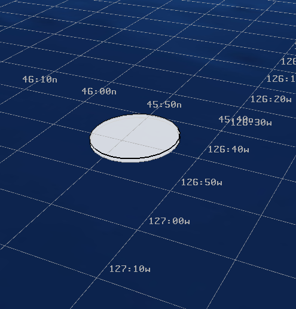
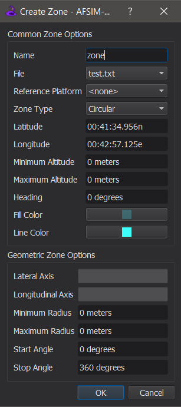
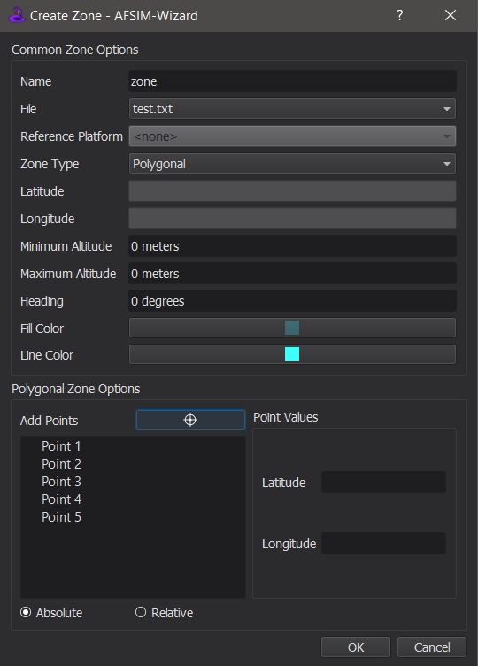
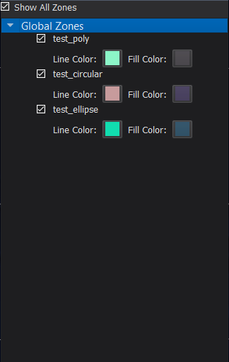
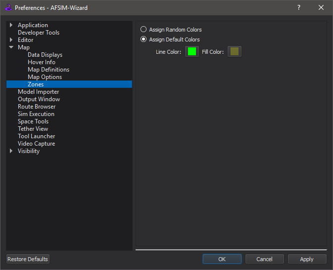

Zone Editor - Wizard¶

The Wizard Zone Editor allows the user to visualize the creation and editing of zones in Wizard. With this plugin, zones can be created via right-clicking on the Map Display and selecting “Create Zone at location,” as well as through the text editor.
Zone Preview¶
While creating a zone via the Create Zone dialog, a preview of that zone will appear and change as the user updates values.
Create Zone Dialog¶
Some values will enable or disable other options in the dialog. Circular zones, for example, will have a minimum and maximum radius while elliptical zones will have axes instead.
Polygonal zones can be created by adding points with the location selector button. Points can be deleted by right-clicking on the point and selecting “Delete Point.” Making the polygonal zone relative will allow setting a reference platform.
Browser¶
The Zone Browser dock widget allows control over which zones and zone sets are visible. Updating a zone color via the color commands will update the corresponding color button. Selecting a new color via the browser will add an update to the zone or zone_set definition. If the zone line or fill color is not set, it will be colored as defined in the preferences.
Preferences¶
From Preferences, the user can select whether each zone/set should be randomly colored or if they should all have a specified color combination.